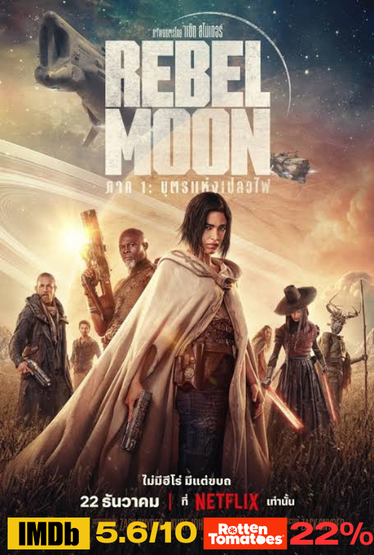
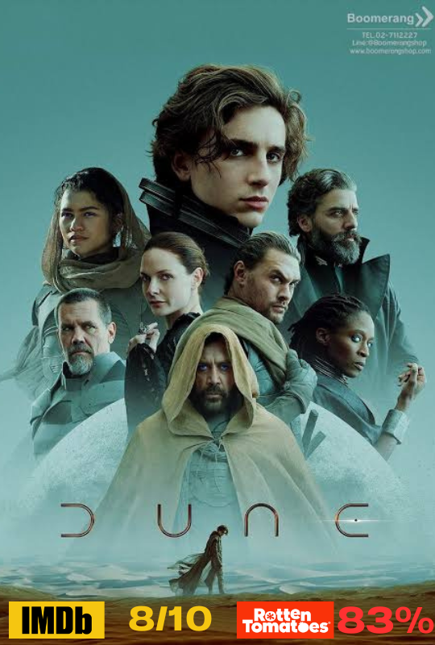
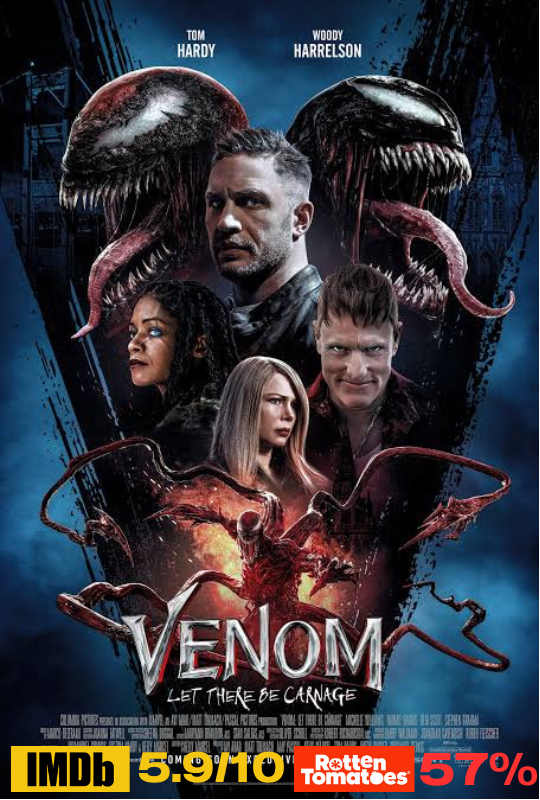
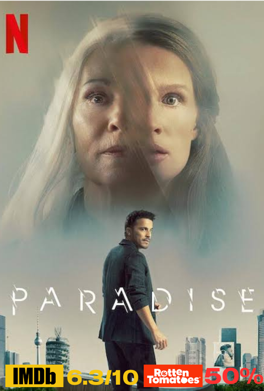
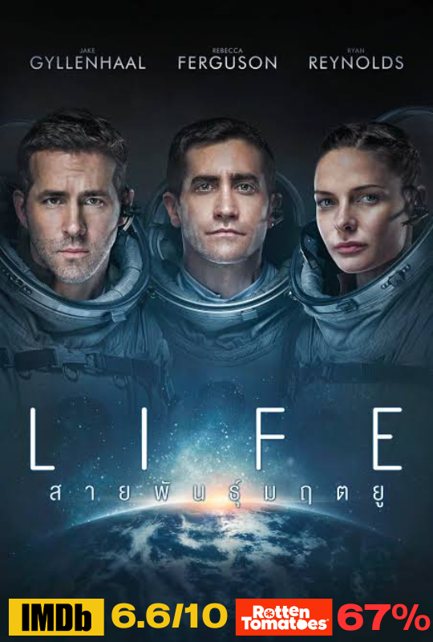
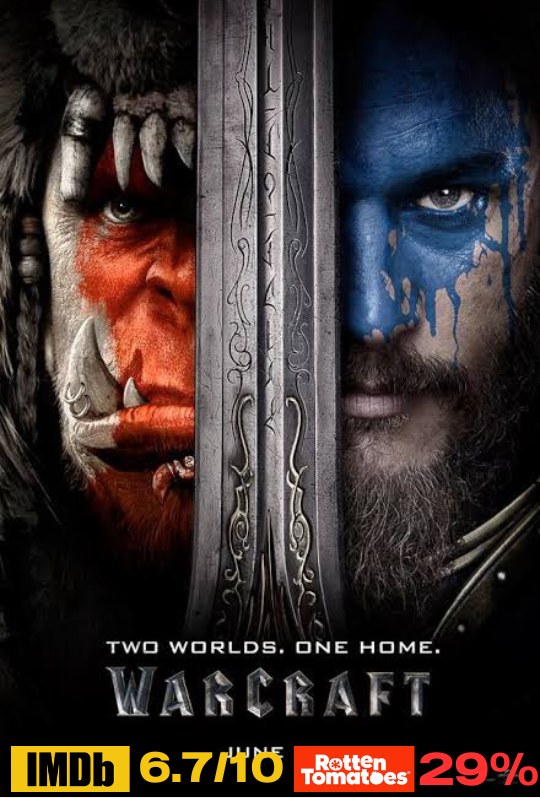
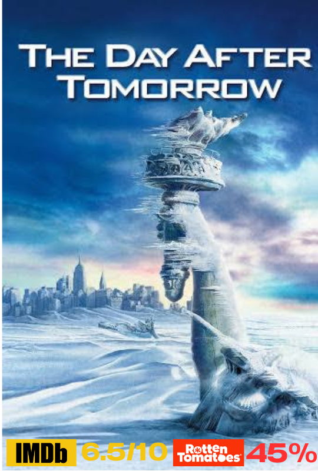
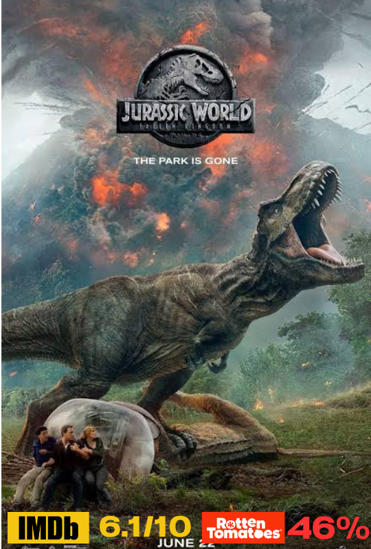

คะแนนรีวิวจากเว็บไซต์ IMDB 5.6/10
คะแนนรีวิวจากเว็บไซต์ Rotten Tomatoes 22%
เรื่องย่อ "Rebel Moon" เป็นภาพยนตร์ที่กำกับโดย แซ็ค สไนเดอร์ เรื่องราวเกี่ยวกับการต่อสู้ของกลุ่มกบฏที่พยายามต่อสู้กับจักรวรรดิที่โหดร้ายในจักรวาลที่เต็มไปด้วยการขัดแย้งและการแย่งชิงอำนาจ
กลุ่มกบฏเหล่านี้ต้องรวบรวมพันธมิตรและทรัพยากรต่างๆ เพื่อสร้างความเปลี่ยนแปลงและนำมาซึ่งความหวังใหม่ให้กับผู้คนที่ถูกกดขี่
ภาพยนตร์นี้เป็นการผสมผสานระหว่างแนวไซไฟและแฟนตาซีที่เต็มไปด้วยการผจญภัยและการต่อสู้.

คะแนนรีวิวจากเว็บไซต์ IMDB 8/10
คะแนนรีวิวจากเว็บไซต์ Rotten Tomatoes 83%
เรื่องย่อ เป็นนวนิยายของ แฟรงก์ เฮอร์เบิร์ต ที่ถือเป็นหนึ่งในผลงานนิยายวิทยาศาสตร์ที่สำคัญที่สุดเรื่องหนึ่ง เรื่องราวเกิดขึ้นในอนาคตอันไกลโพ้นบนดาวเคราะห์ทะเลทรายที่ชื่อว่า
"อาร์ราคิส" หรือ "ดูน" ซึ่งเป็นแหล่งผลิตสไปซ์ (Melange) ที่มีค่าและจำเป็นต่อจักรวรรดิที่กว้างใหญ่เนื้อเรื่องติดตามชีวิตของพอล แอทรีดีส (Paul Atreides)
หนุ่มที่ครอบครัวของเขาถูกแต่งตั้งให้ปกครองดาวเคราะห์ดูน หลังจากที่เกิดการทรยศและการฆาตกรรมในครอบครัว พอลต้องต่อสู้เพื่อฟื้นฟูอำนาจของครอบครัวและปกป้องโลกจากศัตรู
เขาต้องเรียนรู้ที่จะควบคุมพลังจิตที่ตนเองมีและเชื่อมโยงกับชนพื้นเมืองของดาวเพื่อสร้างอนาคตที่ดีกว่า
คะแนนรีวิวจากเว็บไซต์ IMDB 6.6/10
คะแนนรีวิวจากเว็บไซต์ Rotten Tomatoes 53%
เรื่องย่อ เป็นภาพยนตร์ภาคที่ห้าของซีรีส์ "Resident Evil" ซึ่งกำกับโดย พอล ดับลีย์. เนื้อเรื่องเกิดขึ้นหลังจากเหตุการณ์ในภาคก่อนหน้า โดยมีอลิซ (Milla Jovovich)
เป็นตัวละครหลักที่ยังคงต่อสู้กับองค์กร Umbrella ที่ชั่วร้าย ภาพยนตร์นี้เริ่มต้นด้วยอลิซถูกจับตัวโดย Umbrella
และต้องใช้ความสามารถของเธอในการหลบหนีจากสถานที่ที่ถูกสร้างขึ้นเพื่อทดสอบความสามารถของเธอ ด้วยการเผชิญหน้ากับศัตรูใหม่และสถานการณ์ที่ยากลำบาก
เธอและทีมของเธอต้องค้นหาวิธีในการหยุด Umbrella และเปิดเผยความจริงเบื้องหลังการทดลองที่ร้ายแรง.
4.Venom: Let There Be Carnage (2021)

คะแนนรีวิวจากเว็บไซต์ IMDB 5.9/10
คะแนนรีวิวจากเว็บไซต์ Rotten Tomatoes 57%
เรื่องย่อ เป็นภาพยนตร์ที่นำเสนอเรื่องราวของเอ็ดดี้ บร็อค (รับบทโดยทอม ฮาร์ดี) นักข่าวที่กำลังเผชิญกับวิกฤตในชีวิต เมื่อเขาได้รับการติดเชื้อจากสปีชีส์เอเลียนที่เรียกว่า
"เวนอม" ซึ่งมีความสามารถพิเศษในการเปลี่ยนแปลงรูปร่างและให้พลังเหนือธรรมชาติ เมื่อเอ็ดดี้ต้องต่อสู้กับความท้าทายใหม่ในการควบคุมพลังที่ได้มาและป้องกันภัยจากศัตรูที่มีพลังคล้ายกัน
เรื่องราวเต็มไปด้วยแอ็คชั่นและความตื่นเต้นขณะที่เอ็ดดี้และเวนอมต้องเรียนรู้ที่จะทำงานร่วมกันเพื่อปกป้องโลก.

คะแนนรีวิวจากเว็บไซต์ IMDB 6.3/10
คะแนนรีวิวจากเว็บไซต์ Rotten Tomatoes 50%
เรื่องย่อ เป็นนวนิยายของ มอร์แกน โรดส์ โดยเล่าถึงเรื่องราวของครอบครัวที่มีประวัติศาสตร์ที่ซับซ้อนและท้าทาย
เมื่อลูกสาวคนหนึ่งพบความลับเกี่ยวกับพ่อของเธอและการเชื่อมโยงกับเหตุการณ์ที่เกิดขึ้นในอดีต
การค้นพบนี้ทำให้เธอต้องเผชิญกับความจริงที่เปลี่ยนแปลงชีวิตและทำให้เธอต้องเลือกระหว่างความสุขส่วนตัวและความรับผิดชอบต่อครอบครัว
เรื่องราวนี้สำรวจถึงความรัก ความสูญเสีย และการค้นหาความหมายของชีวิตในบริบทที่ท้าทาย.

คะแนนรีวิวจากเว็บไซต์ IMDB 6.6/10
คะแนนรีวิวจากเว็บไซต์ Rotten Tomatoes 67%
เรื่องย่อ ป็นนวนิยายวิทยาศาสตร์ที่เขียนโดย ไมเคิล ไครชตัน เรื่องราวเริ่มต้นด้วยการค้นพบของดาวเทียมที่ส่งมาจากอวกาศซึ่งนำพาเชื้อไวรัสมฤตยูกลับมาที่โลก
เมื่อเชื้อไวรัสชนิดนี้แพร่กระจายและสร้างการระบาดที่ร้ายแรง ทีมวิจัยทางการแพทย์ต้องทำงานแข่งกับเวลาเพื่อศึกษาและควบคุมเชื้อไวรัสก่อนที่มันจะทำลายมนุษย์ทั้งหมด
เรื่องราวนี้สำรวจถึงความตึงเครียดทางวิทยาศาสตร์และการเมืองในสถานการณ์วิกฤต.
7.ปิดฉากฮาโลวีน Halloween Ends (2023)
คะแนนรีวิวจากเว็บไซต์ IMDB 5.8/10
คะแนนรีวิวจากเว็บไซต์ Rotten Tomatoes 20%
เรื่องย่อ เป็นซีรีส์การ์ตูนที่สร้างโดย เควิน อีสต์แมน และ ปีเตอร์ เลียร์ด เรื่องราวเกี่ยวกับเต่าน้อยสี่ตัวที่ได้รับพลังพิเศษจากสารเคมีที่ตกลงมาในท่อระบายน้ำ
พวกมันได้รับการฝึกฝนจากหนูอัจฉริยะชื่อ "สปลินเตอร์" และกลายเป็นนักรบที่มีทักษะในการต่อสู้ นำโดย "ลีโอนาร์โด," "ไมเคิลแองเจโล," "โดนาตาโล" และ "ราเฟล,"
พวกเขาต่อสู้กับอาชญากรรมและศัตรูร้ายแรงในนิวยอร์กซิตี้ โดยเฉพาะศัตรูหลักคือ "ชเรดเดอร์" และองค์กร "เทคโนโด" เรื่องราวเน้นการผจญภัย, การต่อสู้,
และความสัมพันธ์ที่แข็งแกร่งในครอบครัวของพวกเขา.

คะแนนรีวิวจากเว็บไซต์ IMDB 6.7/10
คะแนนรีวิวจากเว็บไซต์ Rotten Tomatoes 29%
เรื่องย่อ เป็นนวนิยายของ คริส เมทเซน ที่เล่าเรื่องราวเบื้องหลังสงครามระหว่างมนุษย์และออร์คในจักรวาลของเกม "วอร์คราฟต์"
เนื้อเรื่องหลักจะเกี่ยวข้องกับการเดินทางของเผ่าออร์คที่ถูกขับเคลื่อนโดยพลังมืดจากดรูอิดที่ชื่อว่า "ซาร์โก" เพื่อพิชิตโลกของมนุษย์ การบรรยายเน้นที่การสร้างและการขยายอาณาจักรของออร์ค
รวมถึงการต่อสู้และความขัดแย้งที่เกิดขึ้นระหว่างสองเผ่าพันธุ์หลัก ในขณะที่พวกเขาต้องเผชิญหน้ากับความท้าทายทั้งภายในและภายนอก.
9.The Day After Tomorrow (2004)

คะแนนรีวิวจากเว็บไซต์ IMDB 6.5/10
คะแนนรีวิวจากเว็บไซต์ Rotten Tomatoes 45%
เรื่องย่อ เป็นภาพยนตร์ที่กำกับโดย โรแลนด์ เอมเมอริช และออกฉายในปี 2004 เนื้อเรื่องกล่าวถึงเหตุการณ์ภัยพิบัติธรรมชาติที่เกิดขึ้นหลังจากการเปลี่ยนแปลงสภาพภูมิอากาศอย่างรุนแรง
ซึ่งทำให้โลกตกอยู่ในสภาพยุคน้ำแข็งอีกครั้งเรื่องราวเริ่มต้นเมื่อวิทยาศาสตร์และการวิจัยของนักอุตุนิยมวิทยาแสดงให้เห็นถึงสัญญาณของภัยพิบัติที่กำลังจะเกิดขึ้น
เนื่องจากการเปลี่ยนแปลงของกระแสน้ำในมหาสมุทร ซึ่งนำไปสู่สภาพอากาศที่รุนแรง เช่น พายุหิมะขนาดใหญ่ น้ำท่วม และอุณหภูมิที่ตกต่ำอย่างรวดเร็วนอกจากการต่อสู้กับภัยธรรมชาติที่เกิดขึ้นแล้ว
ตัวละครหลักยังต้องพยายามหาทางช่วยเหลือและค้นหาครอบครัวของตนที่ติดอยู่ในพื้นที่ที่ได้รับผลกระทบอย่างหนัก
ภาพยนตร์สะท้อนถึงความท้าทายที่เราต้องเผชิญกับผลกระทบจากการเปลี่ยนแปลงสภาพภูมิอากาศและการดำรงอยู่ของมนุษย์ในสถานการณ์วิกฤต.
10.Jurassic World: Fallen Kingdom (2017)

คะแนนรีวิวจากเว็บไซต์ IMDB 6.1/10
คะแนนรีวิวจากเว็บไซต์ Rotten Tomatoes 46%
เรื่องย่อ เป็นภาพยนตร์ที่เป็นภาคต่อของ "Jurassic World" โดยเนื้อเรื่องเกิดขึ้นหลังจากเหตุการณ์ในภาคแรก เมื่ออาณาจักรที่เคยเป็นสวนสัตว์ไดโนเสาร์กำลังถูกทำลายโดยการปะทุของภูเขาไฟ
ทีมสำรวจต้องทำภารกิจช่วยเหลือไดโนเสาร์จากการสูญพันธุ์ โดยในระหว่างนั้นพวกเขาพบว่าไดโนเสาร์บางตัวถูกนำไปใช้ในแผนการที่อันตรายมากขึ้น
เรื่องราวเต็มไปด้วยการผจญภัยและความตื่นเต้นขณะที่ตัวละครพยายามที่จะช่วยเหลือสิ่งมีชีวิตที่น่าทึ่งจากภัยพิบัติที่ร้ายแรง.